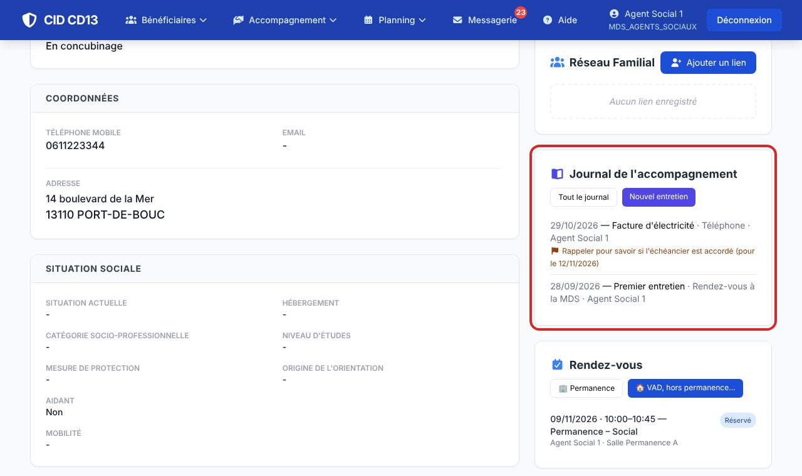
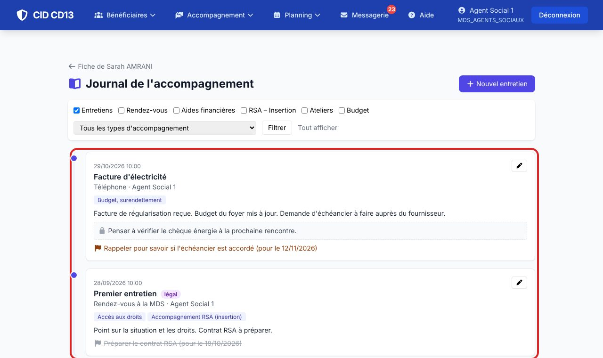
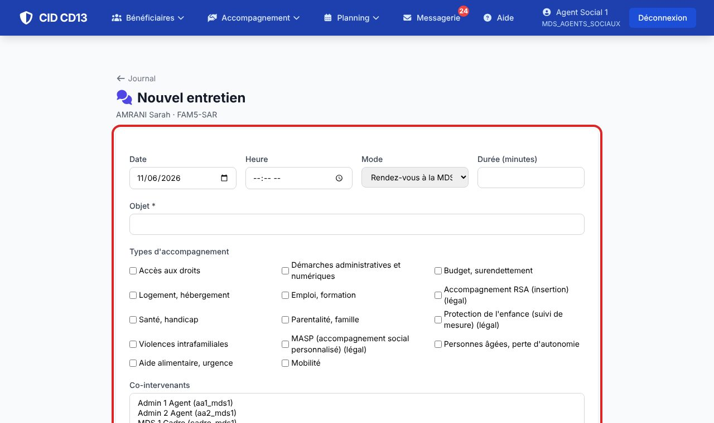
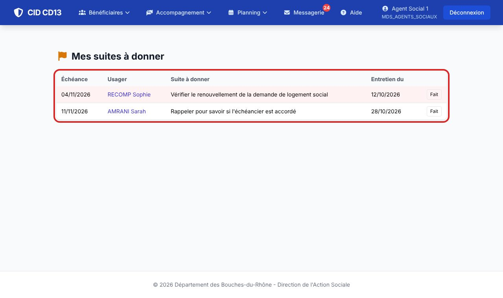

1Ouvrir le journal

- Sur la fiche, l'encart montre les 3 derniers entretiens et leurs suites non faites.
- Tout le journal ouvre le fil complet, du plus récent au plus ancien.
2Lire et filtrer

- Cochez une ou plusieurs natures (entretiens, rendez-vous, aides…) ou choisissez un type d'accompagnement, puis Filtrer.
- Le badge légal signale un accompagnement prévu par un texte (RSA, suivi de mesure, MASP).
- Votre synthèse privée et vos notes personnelles apparaissent sous un cadenas : vos collègues ne les voient pas. Après une reprise du dossier, le nouveau référent les lit en lecture seule.
Les informations préoccupantes et la protection de l'enfance n'apparaissent pas dans le journal : elles restent dans leur module, avec leurs propres droits.
3Saisir un entretien

- Nouvel entretien : date, mode (accueil, RDV, VAD, téléphone…), durée, objet (obligatoire), types d'accompagnement.
- Cochez les autres personnes du foyer présentes et, si besoin, les co-intervenants.
- Synthèse : des faits, lisibles par les agents qui ont accès au dossier. Synthèse privée : vos notes de travail, pour vous seul(e).
- Indiquez une orientation vers un partenaire de l'annuaire et une suite à donner avec son échéance.
Après un rendez-vous réalisé, le journal propose Rédiger le compte rendu : date, heure, mode et durée sont déjà remplis.
4Prendre une note datée
- Dans le journal, le champ Prise de note reçoit une note libre : la date et l'heure sont enregistrées automatiquement.
- Cochez Suit le dossier en cas de transfert si la note doit rester avec l'usager. Sinon elle reste à votre compte.
- Chaque note apparaît dans le fil, avec son statut. Vous pouvez changer ce choix ou Supprimer la note à tout moment, transfert ou non.
- Mes notes (en haut du journal) rassemble toutes vos notes, y compris pour les usagers que vous ne suivez plus.
Ce que vous inscrivez ici est privé. Seul ce qui est coché suit le dossier, comme vous retireriez vos feuilles de travail d'un dossier papier avant de le transférer.
5Suivre ses suites à donner

- Menu Planning → Mes suites à donner : toutes vos suites non faites (auteur ou co-intervenant).
- Fait quand c'est réglé : la suite apparaît barrée dans le journal.
Bon à savoir
- Seul l'auteur modifie son entretien et ses notes.
- Au transfert de l'usager, le journal partagé ne suit pas le dossier : l'ancienne MDS n'y a plus accès. Seules les notes cochées « suit le dossier » arrivent à la nouvelle MDS, en lecture seule.
- Lors d'une reprise dans la même MDS (congé, mutation), le nouveau référent lit en lecture seule les notes et synthèses privées de l'ancien TS, comme il lit les feuilles jaunes d'un dossier papier.
- Avant l'archivage d'un dossier, les notes personnelles et les synthèses privées de l'usager sont détruites.
- La synthèse privée reste une donnée du dossier : en cas de demande d'accès de l'usager (RGPD), elle peut lui être communiquée.
- Les types d'accompagnement se règlent dans l'administration (Bénéficiaires → Types d'accompagnement).
Et ensuite ?
Cliquez sur une image pour l'agrandir. Le cadre rouge montre où cliquer ou quoi remplir. Toutes les données affichées sont fictives.